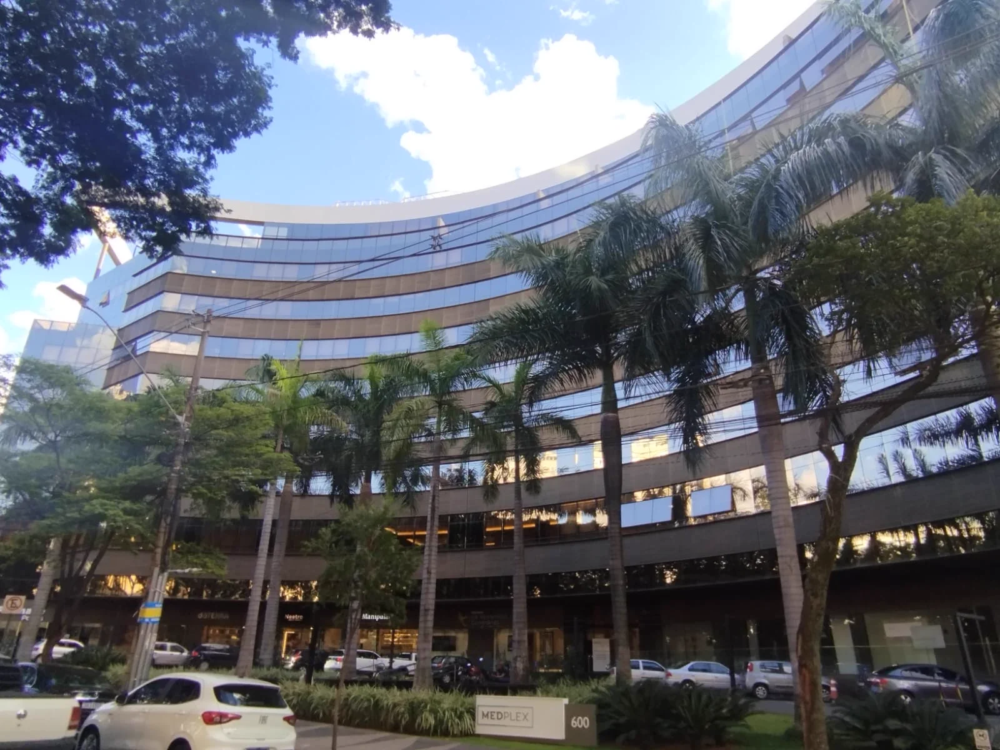
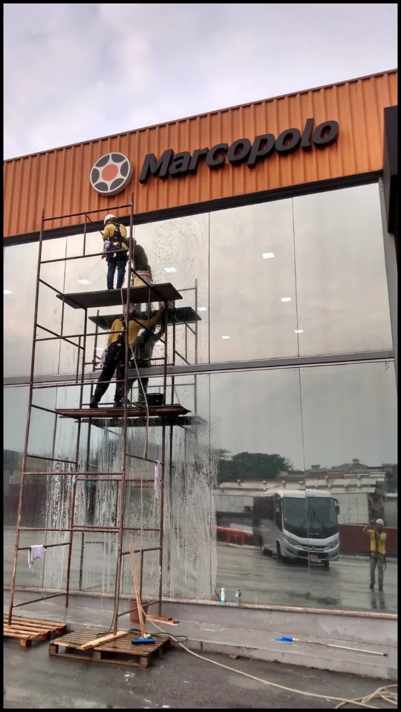
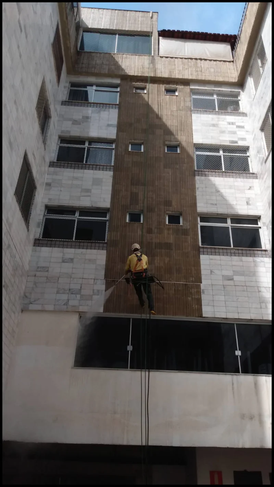

Para Eduardo, a limpeza melhorou a aparência da fachada. Ele destacou o cuidado com os detalhes e a comunicação da equipe.

Limpeza de fachadas e vidros
Limpeza profissional de fachadas e vidros
Atendimento para condomínios e empresas.
A Vertical Chão faz a limpeza externa de prédios. A equipe trabalha em fachadas e vidros.
Antes do serviço, a equipe visita o local. Nessa visita, verifica o material, a sujeira, o acesso e o estado da superfície.
O que a equipe verifica
-
A fachada
A vistoria mostra o material e o estado da superfície.
-
A sujeira
O tipo e o acúmulo de sujeira ajudam a definir a limpeza.
-
Trabalho em altura
A equipe avalia o acesso aos pontos incluídos no serviço.
-
A área ao redor
A equipe planeja o cuidado com a circulação e as áreas próximas. Também define os pontos de proteção.
Uma vistoria para cada prédio
Vidro, pintura e revestimento podem ter estados diferentes. A sujeira também muda de um ponto para outro.
Por isso, a equipe olha o prédio antes de definir o serviço. Material, superfície, acesso e sujeira orientam o método e o escopo.
Quero avaliar minha fachadaComo funciona
-
Vistoria
A equipe observa a fachada, os acessos e a área ao redor.
-
Planejamento
Com a visita feita, define o método e os pontos de proteção.
-
Limpeza
A equipe trabalha nos pontos combinados da fachada.
-
Conferência
No fim, a equipe confere as áreas incluídas no serviço.
Registros do serviço
Três fotos da página original da Vertical Chão.


Relatos sobre limpeza de fachada
Nota: os textos abaixo são resumos. Mantivemos nome, cargo e sentido original.
Ricardo contou que a Vertical Chão limpou as fachadas. Segundo ele, o serviço não atrapalhou o fluxo dos moradores. O relato também cita a organização da área e o compromisso da equipe.
André destacou o atendimento de Ademar, da vistoria à entrega. Segundo ele, Ademar explicou as etapas com clareza e manteve contato durante o serviço. Ele também citou a limpeza e a organização.
Experiências gerais com a Vertical Chão
Nota: estes relatos falam de obras, pintura ou manutenção. Eles tratam da experiência geral com a empresa. Os casos de limpeza estão no bloco anterior.
Valéria contou que o prédio tem 13 andares e 81 unidades. A pintura estava havia mais de 12 anos sem manutenção.
O condomínio conheceu a Vertical Chão em 2021. Após comparar 11 orçamentos, escolheu a empresa. Valéria citou a organização diária e a entrega no prazo.
Luiz citou os equipamentos de segurança da equipe. Também falou do conhecimento em obras e acabamentos horizontais e verticais. Seu relato menciona as condições comerciais e a compra de materiais.
Idalécio falou de obras e manutenção em seu condomínio. Ele destacou as proteções, a segurança e a qualidade do serviço.
Fernanda comparou a Vertical Chão com outras empresas que já contratou. Seu relato cita segurança, limpeza e acabamento. Ela recomenda a empresa a condomínios.
Peça uma avaliação
Conte o que precisa ser verificado no prédio. Enviaremos seu pedido por e-mail ao atendimento comercial da Vertical Chão.
A vistoria ajuda a definir o escopo do orçamento.
Ligar para (31) 99684-8477